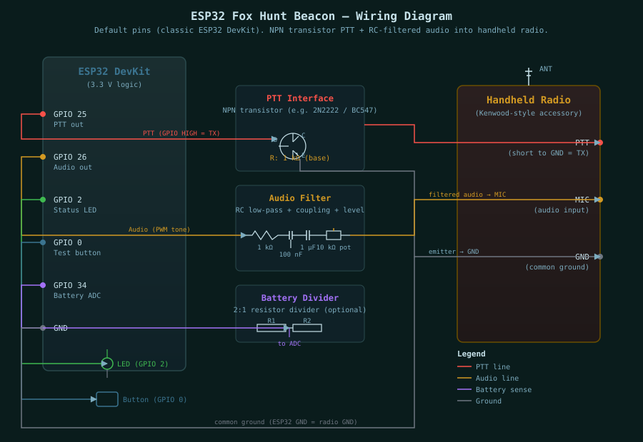

Step 1: Select your ESP32 board from the list below.
Step 2: Click Install Firmware and connect your board via USB when prompted.
BOOT, tap EN/RST, release BOOT.This firmware is designed for cheap handheld radios that expose microphone, ground, and push-to-talk wiring through an accessory connector. Many low-cost radios use a Kenwood-style two-pin connector, but pinouts still vary. Confirm the radio pinout before wiring.

Use isolation or transistor switching. Do not connect an ESP32 GPIO directly to a radio PTT line until you know the radio voltage and current.
ESP32 GPIO 25 ---- resistor ---- NPN base
NPN emitter -------------------- radio/accessory ground
NPN collector ------------------ radio PTT line
ESP32 GPIO 26 ---- RC filter ---- coupling capacitor ---- level pot ---- radio mic input
ESP32 GND ----------------------------------------------- radio/accessory groundFor better protection, replace the NPN PTT switch with an optocoupler. This is especially useful if the radio accessory ground is noisy or if the radio is powered from a different battery.
Start with the ESP32 audio level very low. Handheld microphone inputs are sensitive and will over-deviate easily.
GPIO 26 -> 1 k resistor -> 100 nF capacitor to ground -> 1 uF coupling capacitor -> 10 k trimpot -> mic inputSet the radio volume low while testing. Listen on a second receiver and adjust the trimpot until the CW and tone are clean but not distorted.
Most simple handhelds transmit when the radio PTT line is shorted to radio ground. With the recommended NPN transistor wiring above, the ESP32 GPIO goes HIGH, the transistor turns on, and the radio PTT line is pulled to ground. That means the firmware should use active_high, which is the default.
set ptt active_high (recommended NPN/MOSFET/opto driver)
set ptt active_low (only if your circuit keys on GPIO LOW)Before connecting a radio, run ptt_test. Check the PTT output with an LED or multimeter. It should turn on for about 1.2 seconds, then turn off.
Pin assignments vary by board family. Find your board in the tables below to get the correct GPIO pins for PTT, audio, status LED, test button, and battery ADC.
Applies to: ESP32 DevKit, DOIT DevKit V1, WEMOS LOLIN32
| Function | GPIO |
|---|---|
| PTT control | 25 |
| Audio tone | 26 |
| Status LED | 2 |
| Test button | 0 |
| Battery ADC | 34 |
| Function | GPIO |
|---|---|
| PTT control | 25 |
| Audio tone | 17 |
| Status LED | 2 |
| Test button | 0 |
| Battery ADC | 4 |
| Function | GPIO |
|---|---|
| PTT control | 7 |
| Audio tone | 5 |
| Status LED | 8 |
| Test button | 9 |
| Battery ADC | 3 |
Applies to: WiFi Kit 32, WiFi Kit 32 V2, WiFi LoRa 32, WiFi LoRa 32 V2, Wireless Stick, Wireless Stick Lite
| Function | GPIO |
|---|---|
| PTT control | 13 |
| Audio tone | 17 |
| Status LED | 25 |
| Test button | 0 |
| Battery ADC | 36 |
Applies to: WiFi Kit 32 V3, WiFi LoRa 32 V3, Wireless Stick Lite V3
| Function | GPIO |
|---|---|
| PTT control | 6 |
| Audio tone | 7 |
| Status LED | 35 |
| Test button | 0 |
| Battery ADC | 1 |
| Function | GPIO |
|---|---|
| PTT control | 7 |
| Audio tone | 6 |
| Status LED | 18 |
| Test button | 0 |
| Battery ADC | 1 |
Applies to: Vision Master T190 (TFT), Wireless Paper (E-Ink), Vision Master E213 (E-Ink), Vision Master E290 (E-Ink), Capsule Sensor V3 (no display)
| Function | GPIO |
|---|---|
| PTT control | 4 |
| Audio tone | 3 |
| Status LED | 18 |
| Test button | 0 |
| Battery ADC | 6 |
Applies to: T-Display (TFT), T-Watch (TFT), T1, T7 V1.3 Mini32, T7 V1.4 Mini32
| Function | GPIO |
|---|---|
| PTT control | 25 |
| Audio tone | 26 |
| Status LED | 2 |
| Test button | 0 |
| Battery ADC | 34 |
Applies to: TTGO LoRa32 V1, V2, V2.1.6
| Function | GPIO |
|---|---|
| PTT control | 25 |
| Audio tone | 13 |
| Status LED | 2 |
| Test button | 0 |
| Battery ADC | 35 |
| Function | GPIO |
|---|---|
| PTT control | 25 |
| Audio tone | 13 |
| Status LED | 4 |
| Test button | 0 |
| Battery ADC | 35 |
Applies to: T-Display S3 (TFT), T3-S3 (no display)
| Function | GPIO |
|---|---|
| PTT control | 6 |
| Audio tone | 7 |
| Status LED | 38 |
| Test button | 0 |
| Battery ADC | 4 |
| Function | GPIO |
|---|---|
| PTT control | 7 |
| Audio tone | 5 |
| Status LED | 8 |
| Test button | 9 |
| Battery ADC | 3 |
ptt_test.test and confirm that audio output works.After flashing, the beacon boots into WiFi AP mode. Connect to the 9M2PJU-Fox-XXXX WiFi network from a phone or laptop and browse to http://10.0.0.8/ to open the web admin UI. Every setting below is available on that page. Settings are saved to ESP32 flash and persist across reboots.
| Setting | Default | Description |
|---|---|---|
| Callsign | 9M2PJU | The amateur radio callsign sent in CW at the start of each transmission. Set this to your own licensed callsign as required by local regulations. |
| Fox ID | MOE | The ARDF fox identifier sent after the callsign. Standard IDs: MOE (fox 1), MOI (fox 2), MOS (fox 3), MOH (fox 4), MO5 (fox 5), MO6 (finish beacon). |
| Mode | Fox | Fox (scheduled): transmits for the TX time, then waits for the idle time, and repeats. Beacon (continuous): keys PTT continuously and re-sends the CW ID at the beacon ID interval. Use beacon mode for a finish-line MO6 transmitter on a separate frequency. |
| Fox sync | On | When enabled, the startup delay is automatically calculated from the Fox ID so that five beacons powered on at the same time fall into the correct IARU round-robin order (MOE=0 s, MOI=60 s, MOS=120 s, MOH=180 s, MO5=240 s). Disable to set the startup delay manually. |
| Setting | Default | Range | Description |
|---|---|---|---|
| Startup delay | 10 | 0 - 3600 | Wait time after power-on before the beacon schedule starts. Gives the operator time to hide the beacon. Overridden by fox sync when enabled. |
| Transmit time | 60 | 3 - 600 | How long the radio transmits each cycle. IARU standard is 60 seconds. |
| Idle time | 240 | 5 - 3600 | Quiet time between transmissions. IARU standard is 240 seconds for a 5-fox cycle (total cycle = 300 s). |
| Beacon ID interval | 60 | 10 - 600 | In beacon (continuous) mode, how often the CW ID is repeated while PTT is held. Ignored in fox mode. |
| Setting | Default | Range | Description |
|---|---|---|---|
| CW speed (WPM) | 12 | 5 - 35 | Morse code speed in words per minute. Lower values are easier to copy by ear. |
| CW tone (Hz) | 700 | 300 - 1800 | Audio tone frequency for the CW ID and steady carrier. 700 Hz is a common ARDF standard tone. |
| Warble | Off | On / Off | When enabled, an alternating warble tone plays after the CW ID until the TX timer ends. Non-standard but useful for training. Disabled by default for IARU compliance. |
| Warble low (Hz) | 700 | 300 - 1800 | Low frequency of the warble alternation. |
| Warble high (Hz) | 900 | 300 - 1800 | High frequency of the warble alternation. |
| Warble step (ms) | 350 | 100 - 3000 | How fast the warble alternates between low and high frequencies. Higher values = slower alternation. |
| Setting | Default | Range | Description |
|---|---|---|---|
| PTT polarity | Active HIGH | HIGH / LOW | GPIO level that keys the radio. Use Active HIGH for the recommended NPN transistor, MOSFET, or optocoupler interface (GPIO goes HIGH to key). Use Active LOW only if your circuit keys when GPIO is LOW. |
| PTT lead (ms) | 350 | 50 - 3000 | Delay after keying PTT before audio starts. Gives the radio time to fully transmit before audio is sent. |
| PTT tail (ms) | 350 | 50 - 3000 | Delay before releasing PTT after audio stops. Ensures the final CW character is fully transmitted before unkeying. |
ptt_test to key PTT for 1.2 seconds without audio.| Setting | Default | Range | Description |
|---|---|---|---|
| Battery monitor | Off | On / Off | Enables low-battery cutoff via a voltage divider on the ADC pin. Leave off until a divider is installed and calibrated. |
| Battery scale | 2.0 | 1.0 - 10.0 | Voltage divider multiplier. If using two equal resistors (e.g. 100k + 100k), set to 2.0. Calibrate by comparing the reported voltage with a multimeter. |
| Low battery (V) | 3.4 | 2.5 - 15.0 | Voltage at which the firmware stops transmitting to protect the battery. For a single Li-ion cell, 3.4 V is a safe cutoff. |
4.12V 87%). The percentage uses a piecewise-linear Li-ion discharge curve (3.2 V = 0%, 4.2 V = 100%). When voltage drops below the cutoff, the beacon stops transmitting and the status LED flashes a low-battery pattern. The beacon resumes when the voltage recovers above the cutoff.| Setting | Default | Range | Description |
|---|---|---|---|
| WiFi AP / Web Admin | On | On / Off | Turns the WiFi access point and web admin UI on or off. When off, WiFi is disabled to save power. Re-enable from the on-screen menu (double-click the button) or via serial set wifi_ap on. |
| AP auto-off (min) | 10 | 0 - 1440 | If no phone or laptop connects and no web requests are received for this duration, the AP shuts down to save power. Set to 0 to keep the AP on indefinitely. |
| Display eco mode | On | On / Off | When enabled (default), the display turns off after 4 seconds of inactivity to save power. Any button press wakes the display for another 4-second glance. A 10-second grace period keeps the display on after boot. Only applies to boards with a display. |
The web admin UI also has five action buttons at the bottom of the page:
| Button | Action |
|---|---|
| Save | Saves all settings to ESP32 flash memory. Settings persist across reboots. |
| Test TX | Triggers one complete beacon transmission immediately. Useful for verifying the radio interface without waiting for the schedule. |
| PTT Test | Keys PTT for about 1.2 seconds with no audio. Use this to verify the PTT circuit before connecting audio. |
| Defaults | Restores all settings to factory defaults and saves them to flash. |
| Reboot | Restarts the ESP32. Required for some settings (like WiFi AP on/off) to take effect. |
9M2PJU-Fox-XXXX (last 4 hex of the board's MAC address).http://10.0.0.8/ manually.set wifi_ap on.